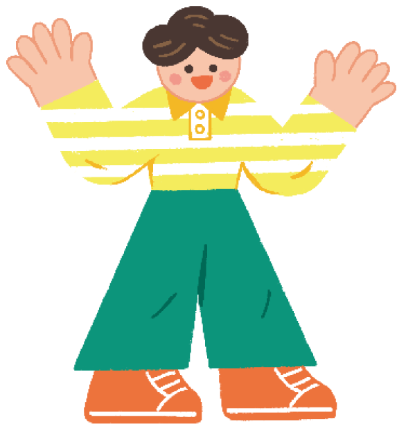
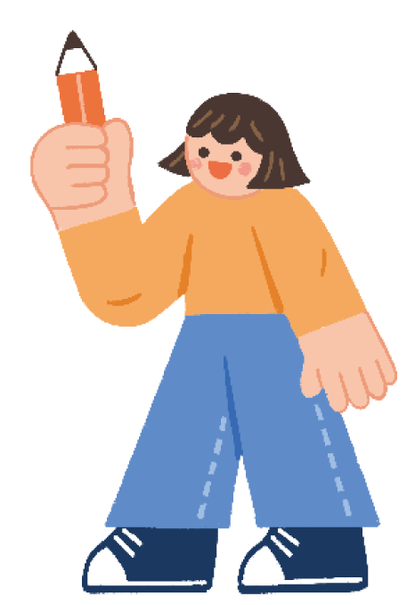

대단원 마무리
점검한 내용을 바탕으로 이후의 학습 계획을 세우고 실천해 보자.
앞으로 시나 소설을 감상할 때 누가 말하고 있는지 파악하고, 말하는 이에 따른 효과를 생각해 보면 작품을 더욱 재미있게 읽을 수 있을 것 같아.
시의 화자, 소설의 서술자가
지닌 특성이 작품에 어떤 효과를
줄 수 있는지 생각해 보면서
시나 소설을 써 봐야겠어.
지닌 특성이 작품에 어떤 효과를
줄 수 있는지 생각해 보면서
시나 소설을 써 봐야겠어.

